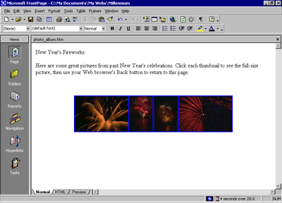
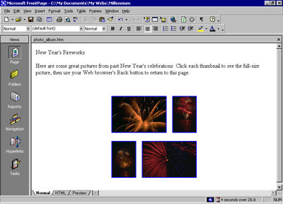

| ||||
The World Wide Web has a graphical interface, so it's no surprise that the most popular Web sites have pictures to look at. Scanners and digital cameras have become much more affordable, and many photo-developing places now offer to put your pictures on a CD-ROM so you can share them online.
While working with the graphics and clip art in the previous procedures, you saw how easy it is to place pictures on Web pages using FrontPage. In this part of the lesson, you'll create an online photo album of actual photographs. For the Millennium Celebration Web, you'll share some great photos of fireworks.
To edit the Photo Album page
Next, you'll place four pictures on the current page. They are already part of the Web site because you imported them in the previous procedure.
FrontPage inserts the first of the four fireworks pictures you will place on this page. Next, insert the other three pictures, one after the other. Don't worry about their large size and proper placement just yet.
The remaining pictures are placed on the page, one after the other.
Having lots of large pictures on your Web page for people to look at is great, but not everyone has a fast connection to the Internet. Over a dial-up connection with a modem, pages with large pictures and complex designs can take a long time to download before the Web browser displays the page.
Imagine changing the channel on your TV and having to wait several minutes before you see what's playing on that channel. It's no different on the World Wide Web. There are many other "channels" or Web sites to look at. No matter how interesting your site may be, people may quickly lose interest if it takes too long to download.
On the status bar, FrontPage automatically displays the estimated time it will take for the current page to download over the Internet when the page is opened in a Web browser. The default measurement assumes that your site visitors will have a 28.8K modem connection. You can adjust this measurement for other common connection speeds by right-clicking the red hourglass icon and choosing another connection speed from the shortcut menu.
For this tutorial, we'll leave the download speed at 28.8K. On the current page, you can see that the estimated download time for the Photo Album page is 97 seconds. This means that people who will visit the Millennium Celebration Web will have to wait a minute and a half before they can see the four pictures you've just inserted. That's quite a long time to wait for just four pictures.
By creating thumbnails -- small preview images of pictures -- you can give your visitors the choice of whether they want to spend time downloading the full-size pictures on your page. FrontPage makes creating thumbnails easy with the Auto Thumbnail tool.
To create thumbnails of pictures
FrontPage displays the Pictures toolbar below Page view.
FrontPage creates a thumbnail of the selected picture and adds a blue border to indicate that it contains a hyperlink to the original picture in your Web site. When site visitors visit this page, they can click each thumbnail to download the full-size pictures.
Your page should now look like this:

When FrontPage creates thumbnails, it doesn't actually modify the original picture files in any way. Instead, it quickly makes a copy of each picture, resizes it, downsamples the display resolution of the picture, inserts a hyperlink pointing to the original picture file, and adds a border around the thumbnail to indicate the presence of a hyperlink.
You can see why the Auto Thumbnail button is a real timesaver. Doing all of that manually for each picture could take a while.
Because FrontPage made small copies of the pictures that are represented by a thumbnail, it needs to save the thumbnails to the current Web site. The names of the thumbnail picture files are the same as the original pictures, but FrontPage adds a "_small" suffix to each file name for easy identification.
FrontPage saves the four thumbnails to the Millennium Celebration Web.
Because you have an even number of pictures, you can arrange them a little better than all on one line. You can treat thumbnails like other pictures on your pages and move them where you want them.
To finish the Photo Album page
FrontPage creates space between the first and second thumbnail.
FrontPage moves the third and fourth thumbnail to the next line.
FrontPage creates space between the third and fourth thumbnail.
Your page should now look like this:

Now take another look at the FrontPage status bar. The Photo Album page previously would have taken 97 seconds to download.
After replacing the large pictures with thumbnails, the Photo Album page now only takes 4 seconds to download. That's much better!
Did you find this material useful? Gripes? Compliments? Suggestions for other articles? Write us!
© 1999 Microsoft Corporation. All rights reserved. Terms of use.